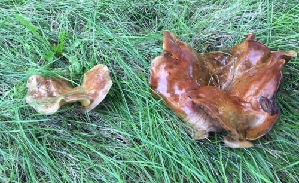

We get our dihydrogen monoxide from the following locations:
- Purified glaciers.
- The runoff from various snowy mountains.
- Lake Michigan.
- The Black Sea.
- The Middle of the Pacific Ocean.
- My backyard after it rains.
- The water dropletts off of leaves after it rains.
- The dew off the grass on a chilly morning.
The price of the dihydrogen monoxide depends on the source.
